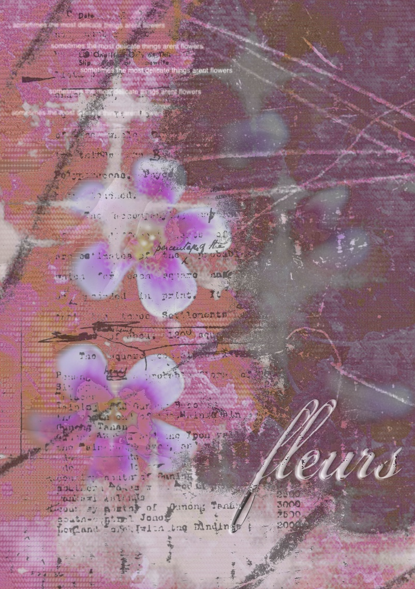
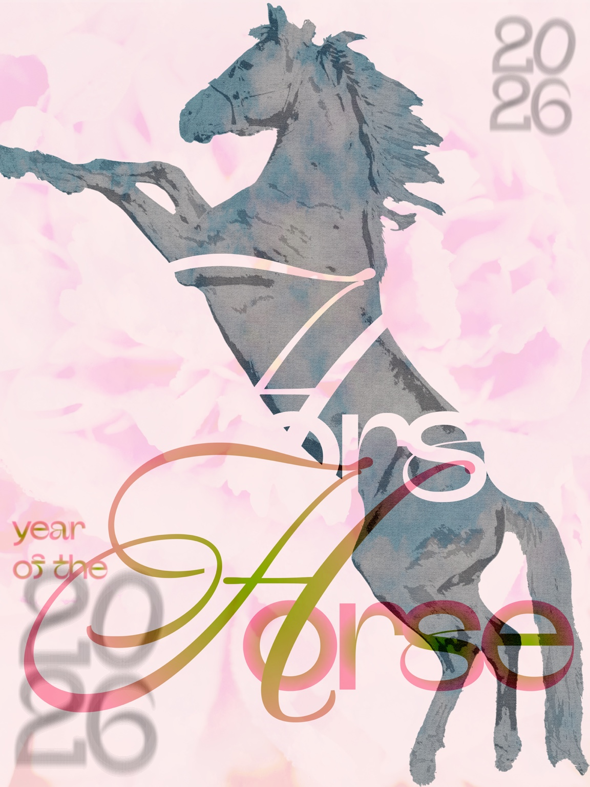
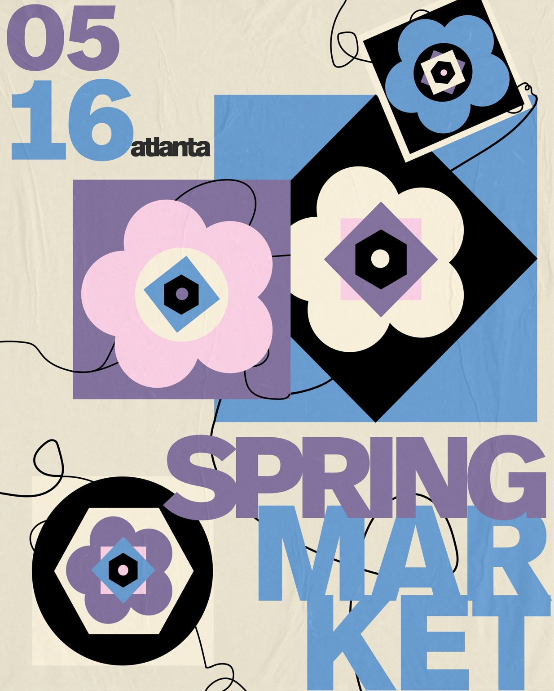
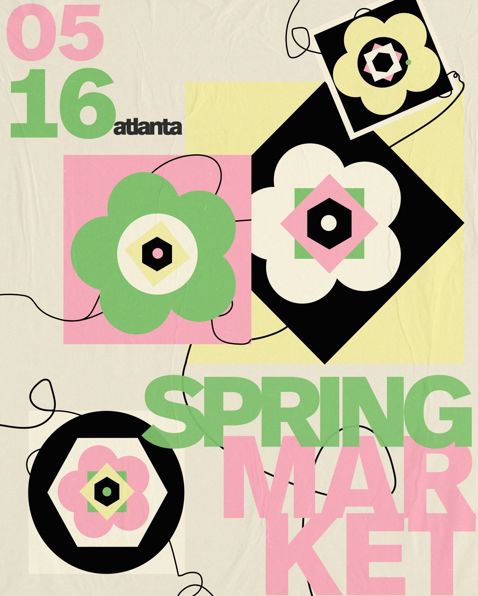

01 / Personal experiment
Flowers
A layered digital collage exploring softness, distortion, and the tension between delicate imagery and distressed texture.
Digital collage / typography / texturePosters / experiments / one-offs
the visual odds + ends
that keep things interesting
A growing collection of posters, personal experiments, and smaller pieces made between larger identity projects.
Some begin with a brief. Others begin with a color, a phrase, or the very specific need to make something strange and pretty.

A layered digital collage exploring softness, distortion, and the tension between delicate imagery and distressed texture.
Digital collage / typography / textureAn editorial poster study combining a gestural horse illustration with blurred typography, oversized numerals, and translucent color.
Art direction / illustration / typography
Two color studies for a lively Atlanta spring market poster. Modular flower forms, tangled linework, and oversized type create a system that feels playful, busy, and built for a crowd.


more added whenever
inspiration hits ♡